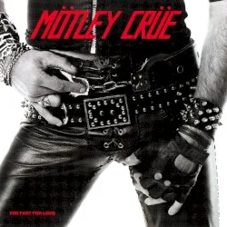
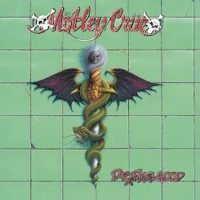
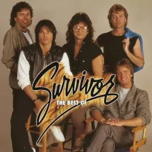
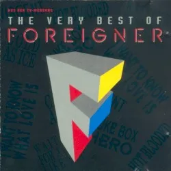

Ficha
- Soy
- Oyente · Coleccionista · Músico
- Géneros
- rock · metal · hard rock
- Escucho en
- Vinilo · CD · Streaming
- 1.er show
- Deep Purple
Huella de gusto
2020s
Su familia más presente es Rock, sobre todo hard rock.
Artistas seguidos
RattChappell RoanEuropeMötley Crüe
Lo que no es público lleva su marca:SeguidoresSolo tú
Empieza por aquí
- Álbum
Did you know that there's a tunnel under Ocean Blvd
Lana Del Rey - Álbum
The Rise and Fall of a Midwest Princess
Chappell Roan  Canción
CanciónAlone Again
Dokken
ÁlbumToo Fast for Love
Mötley Crüe

Bad AnimalsHeart · ★★★★ 4,0
Un disco que suena enorme de principio a fin.

Christmas the Whole Year RoundSabrina Carpenter · ★ 1,0
No es para mí.

Stand OutSabrina Carpenter · ★ 1,0
Se queda corta.
| 24 oct | Mötley CrüeMötley Crüe | ||
| 24 oct |  | Dr. FeelgoodMötley Crüe | Solo tú |
| 22 oct |  | RattRatt | Seguidores |
| 21 oct |  | Can't Blame a Girl for TryingSabrina Carpenter |

Sabrina Carpenter
Álbumes · 1



Best AOR songs
Canciones · 4 Seguidores
Aguante Survivor!!
Álbumes · 20 Solo tú2010 Rock Metal
Álbumes · 0 Solo túEmpieza por aquí
Hasta cuatro discos o canciones para quien llega a tu perfil, con una nota tuya.
Reseñas
Tus reseñas aparecen aquí.
+ Escribir unaDiario
Lo que escuchas, día a día.
+ Registrar una escucha